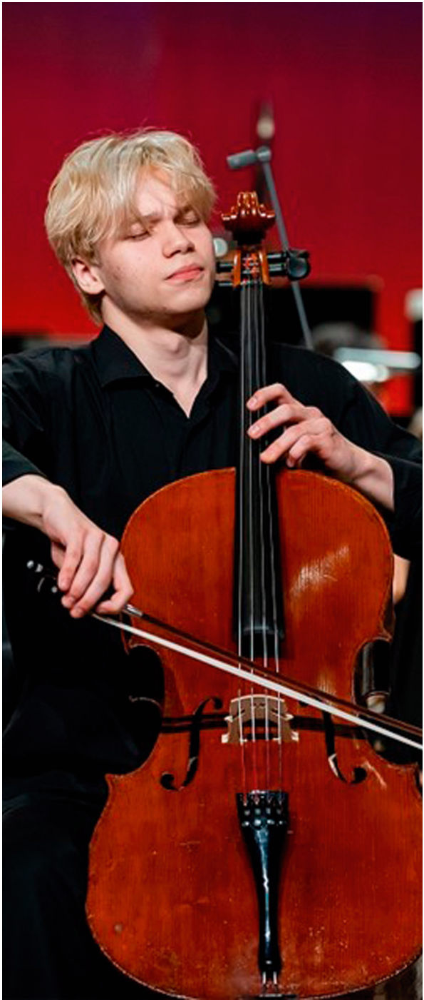
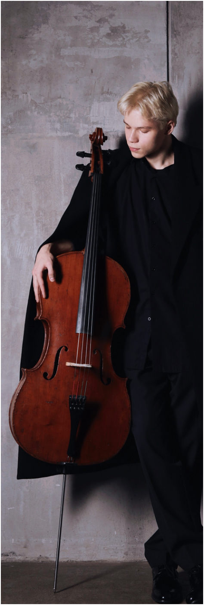

Молодые звёзды · с. 50–51
Богдан Ефремов
Молодые звёзды Всероссийской виолончельной академии

CELLO Журнал: Расскажи о себе в двух словах.
Богдан Ефремов: Меня зовут Богдан Ефремов, мне 20 лет. Родом из Санкт-Петербурга, но основную часть обучения прошёл в Москве. В текущем году переехал в Германию для дальнейшего развития. Я Сова по хронотипу.
В рамках проекта Новая школа, проводимого Академией, ты принимал участие в мастер-классе Ивана Сканави; какие остались впечатления? Как ты относишься к небольшой разнице в возрасте между учеником и педагогом?
От мастер-класса Сканави остались исключительно положительные впечатления – урок получился довольно продуктивным. Разница в возрасте у нас составляет 10 лет. Это годы накопленного им опыта, знаний и занятий с ведущими педагогами по всему миру. Естественно, он может многое мне передать, и для меня это крайне важно. Я считаю, что всегда нужно заниматься с разными мастерами и выслушивать разные мнения, среди них пытаться найти своё собственное.
К кому ещё ты хотел бы попасть на мастер-класс?
Конкретных имён очень много, но номер один – это Джованни Соллима. С ним я очень хотел бы позаниматься. В общем и целом, мне интересны люди, которые действительно смогут дать мне что-то новое, освежить взгляд на музыку и материал, чтобы помочь в дальнейшем формировании собственного пути.
Как произошло, что ты стал играть на виолончели?
Играть на виолончели я захотел сам – никто не заставлял. Это желание появилось у меня ещё в три года. В четыре я всё-таки уговорил маму купить инструмент и начал заниматься с педагогом. Почему именно виолончель?

Всё дело в интерактивных музыкальных плакатах для детей, которые были популярны в нулевые годы. У меня как раз был такой: нажимаешь кнопку – и звучит инструмент. Мне больше всего понравилось, как звучит виолончель, и я загорелся идеей научиться на ней играть.
Как ты представляешь своё будущее?
Идеальной картиной моего будущего является множество концертов по всему миру, потому что есть две вещи, которые мне нравятся больше всего – играть концерты и путешествовать.
Летом ты получил Вторую премию на конкурсе имени А. Хачатуряна. Какие впечатления остались? Что запомнилось больше всего?
У меня остались исключительно приятные впечатления, ведь я один из тех, кому реально нравятся конкурсы. В них меня привлекает абсолютно всё: выбор репертуара, процесс подготовки, поездки в новые страны. И так каждый раз! Но самое ценное и запоминающееся – это люди. Я завожу полезные связи и нахожу друзей, периодически встречаю и старых приятелей. Ничем не заменить эту неповторимую атмосферу, когда собирается виолончельная компания, все вместе ходят обедать, слушают выступления друг друга и делятся впечатлениями. Кроме того, после конкурса всегда есть шанс поговорить с членами жюри. Это бесценный опыт, который многие недооценивают. Зачастую каждое такое событие – это огромный скачок в развитии. В моём случае конкурс имени Хачатуряна стал мощным стимулом для профессионального роста.
Блиц
Камерный состав или соло с оркестром?
Соло с оркестром.
Домик на берегу озера или яркий мегаполис?
Домик.
Способность, которой ты хотел бы обладать?
Слышать себя со стороны.
Качество, которое ты больше всего ценишь в музыканте?
Честность.
Композитор или исполнитель любой эпохи, с которым ты хотел бы пообщаться лично?
Альберто Хинастера.